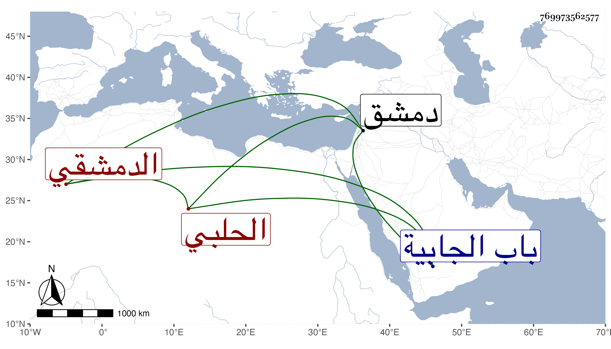

0902Sakhawi.DawLamic.ITO20230111-ara1.EIS1600.769973562577
Biography ID: 769973562577
415
أحمد بن محمد بن علي بن أبي بكر بن محمد الخواجا الشهاب بن الخواجا الشمس الحلبي الأصل الدمشقي بن المزلق بضم الميم وفتح الزاي وكسر اللام المشددة أخو حسن وعلي الآتيين . مات في ليلة ثالث عشر المحرم سنة ثلاث وسبعين وثمانمائة وصلى عليه من الغد بجامع دمشق ودفن بتربة والده خارج باب الجابية وكانت جنازته حافلة وكثر الثناء عليه ، وهو الذي أنشأ المطبخ بباب البريد ثم وقف عليه أهل الخير رحمه الله وإيانا .
